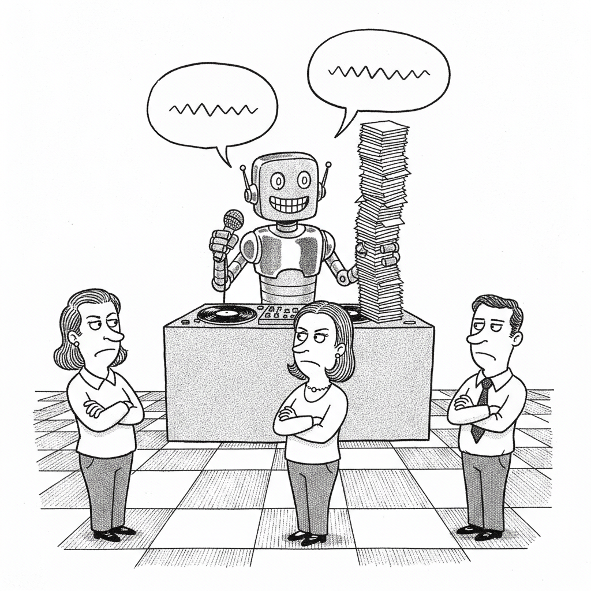

Your daily AI news digest
AI the News That's Fit to Prompt

Wall Street Braces for Anthropic’s Aggressive Spending
As Anthropic introduced itself to potential stock market investors this week, Dario Amodei predicted the end of cancer and mental illness within a decade and said, “If we do this right, we can create an age of miracles.” The Times reports that Wall Street is now grappling with what that costs. Analysts at Goldman Sachs, the bank leading the I.P.O., have told investors privately that they forecast Anthropic will burn through more than $65 billion next year and another $41 billion in 2028, according to two people familiar with the discussions. Chief financial officer Krishna Rao said only that “we are in aggressive investment mode.”
That would be a sharp change from the picture in the prospectus, which shows Anthropic generated cash from its business in the first nine months of this year and has barely spent the $141 billion it raised privately. The Nasdaq listing, expected next Thursday, could value the company at $1.4 trillion and raise an additional $100 billion. The prospectus also warns of about $40 billion in coming expenses tied to employee stock grants that have not yet hit its accounting books.

Is Bad News for Jensen Huang Also Bad News for the AI Industry?
On TechCrunch’s Equity podcast, the hosts say the ground shifted quickly under Huang even though concerns about his relationship with Alice Huang had circulated in intelligence circles for nearly a year. Anthony Ha notes there was no succession plan, and calls CFO Colette Kress, the interim CEO, a caretaker appointment. The bigger worry is Nvidia’s role as what one host calls the “Bank of Nvidia,” with stakes in CoreWeave, Nebius, OpenAI and Anthropic.

“I came for the music, not the footnotes.”

AI DJs Completely Kill My Groove
YouTube Music and Spotify want synthetic hosts to curate your playlists, and WIRED’s reporter says the awkward banter and bogus song trivia are ruining the vibe. A roughly 30-second interjection that mispronounced the name of pop artist Charli XCX was the last straw after months of leaving YouTube’s Beyond the Beat DJ switched on.
Pick the correct expansion for each acronym from today’s news.

Apple Launches New App to Study How People Use AI for Health
Apple is partnering with OpenEvidence on a study of up to 200,000 U.S. participants over more than 12 months. The app answers everyday medical questions grounded in sources like NEJM, JAMA and Nature, and users can optionally share HealthKit data. Apple says data is anonymized, will not train AI models, and is deleted by OpenEvidence after 24 hours.

This AI Tamagotchi Turns Everyday Objects Into Needy Virtual Pets
Carnegie Mellon PhD student Daehwa Kim’s OATs, or Object Agent Twins, are tiny E Ink displays that give houseplants, skateboards and dumbbells expressive personalities to nudge better habits. The main module costs around $20, and Kim, who won two Honorable Mentions at the UIST conference, has not decided whether to sell kits.

Indian Chip Startup Bharat Semi Lands $24M Seed Round as It Eyes Global AI Sensor Market
The pre-revenue New Delhi startup is building programmable image sensors that combine capture, processing and AI on one chip, and says it has design wins with General Atomics and Kaynes Semicon. Its co-founder says the approach could cut system costs by at least 70 percent, with initial commercial production targeted for 2027.
AI Teammates That Finish the Work (Grok Bot)
xAI’s product page says each Grok Bot runs on its own cloud machine with browser and terminal access and can hand work to other bots. The claims are xAI’s own.
datasette-agent 0.6a0
The release adds an agent prompt directly to the Datasette homepage, with support for hash-mentions of tables and queries.
Our New Blog for Science
OpenAI launches a blog where scientists can describe AI-assisted discoveries and methods, plus practical guidance on tasks like data analysis and literature review.
A Step Toward Defining the Standard Model on a Lattice
In a guest post, physicist Nathaniel Craig, a visiting scientist at OpenAI, describes working with GPT-6 Astra on a candidate lattice definition of the Standard Model. The claim comes from the post itself and has not been independently verified.
Introducing ChatGPT Wallet
OpenAI says the agents inside its dots feature can now buy things for users without seeing the actual card details, with a Face ID or fingerprint check on each purchase. Users keep their card rewards and dispute protections. It is a gradual rollout limited to U.S. ChatGPT Pro subscribers 18 and older with eligible U.S.-issued cards.